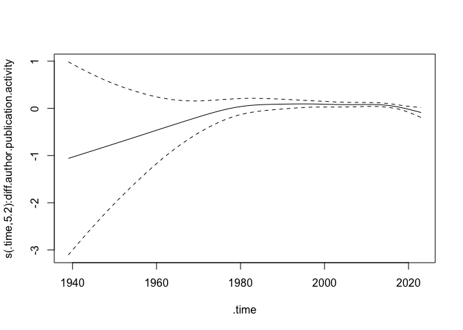
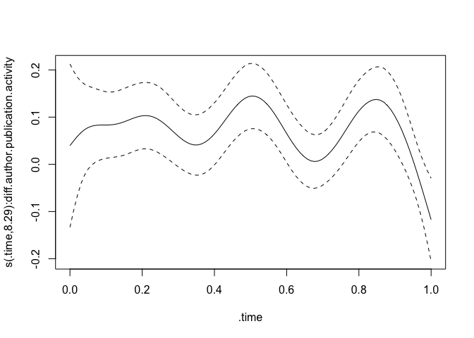
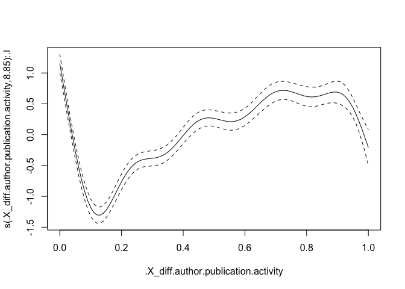
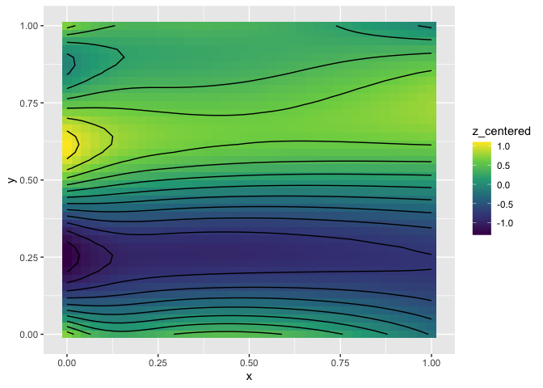

Practical 2: Scientific Innovation
The practical sessions of this workshop focus on fitting relational hyper event models using the amorem package. If you would like to replicate the code locally, feel free to download the files in the box below:
📥 Download files
- Scientific-Innovation.R — R script, for following along with the code
- Scientific-Innovation.Rmd — R Markdown source file
- Scientific-Innovation.zip — working directory with all data and image files needed to replicate the full analysis
If you plan to run the R Markdown file, make sure to place it in the same folder as the extracted contents of Scientific-Innovation.zip.
Introduction and Set up
In the two practicals of the workshop All You Need to Know About
Relational Hyper-Event Modeling, we show how to use amorem to fit
relational hyper-event models with increasing levels of complexity.
If you are running this tutorial locally, make sure to uncomment the
remotes::install_github command below before installing the package.
# remotes::install_github("franciscorichter/amorem")
library(amorem)
This practical also requires the dplyr library. If you do not have it
installed, uncomment the install.packages("dplyr") line below.
# install.packages("dplyr")
library(dplyr)
To show more complex types of effects you also might need mgcViz. Make
sure to install it if you did not yet.
# install.packages("mgcViz")
library(mgcViz)
Aminer Citation Network
load(file="01-Data/dat_gam.RData")
nrow(dat_gam)
## [1] 30136
We begin the second part of the tutorial by uploading a new dataset. This dataset has been sampled from an existing dataset used in [Lerner et al., 2025; Boschi et al., 2026].
The original dataset consists of the DBLP Citation Network V14, restricted to journal articles, and is derived from the Aminer Citation Network [Tang et al., 2008].
Code to pre-process and filter the data is publicly available at https://github.com/juergenlerner/eventnet/tree/master/data/scientific_networks/aminer_2023. To allow you to upload the data and experiment in real time, we provide a sampled version of the original dataset, consisting of $n = 30\,136$ rows.
As discussed in the theoretical part of the workshop [reference], a relational hyperevent is defined as the formal publication of a scientific work, marking the moment when a group of authors presents their research together with a set of citations listed in the reference section.
\[\{ r_i = (t_i, S_i, R_i), i = 1, \ldots, 10\ 046 \}\]Here, $r_i$ represents the journal article published at time $t_i$ by a group of authors in $S_i \subseteq V^S_{t_i}$ citing journal articles in $R_i \subseteq V^R_{t_i}$.
These events can be represented as time-stamped directed hyperedges of a two-mode network. There are two types of nodes: authors (sender set) and cited papers (receiver set). When a new hyperedge occurs at time $t_i$, a new publication $r_i$ – authored by a set of authors in $S_i$ and citing a set of papers in $R_i$ – enters the system and can be cited by other papers at later time points.
This two-mode network representation also makes it possible to examine more complex relationships, such as author-cites-paper, paper-cites-paper, and author-cites-author. These three relations are part of a broader class that we will employ later.
The sampled events span from 1939 to 2023. The provided dataset is already in a case–1–control formulation (wide format), which is explored in more detail in the following section of the tutorial.
range(dat_gam$TIME_ev)
## [1] 1939 2023
Inspecting case-1-control dataset
This data set contains 76 variables (quite a large number!).
ncol(dat_gam)
## [1] 76
As in the previous tutorial, we provide you with the case–control data set already computed, but we also try to explain the rationale behind its construction.
Fortunately, we do not need to interpret all 76 variables but just around half of them :). Why is that? For each row, the same piece of information is evaluated twice: once for the event and once for the non-event.
Let’s look at them step by step.
We (probably) understand by now that the statistical unit of relational event modeling is the triple composed of the sender, the receiver, and the time of the event. Where can we find this information? In the second, third, and fourth columns, respectively.
head(dat_gam[, c("SOURCE_ev", "TARGET_ev", "TIME_ev")])
## SOURCE_ev
## 1 |53f46b8adabfaeee22a66f7d|
## 48 |53f4b830dabfaedce564e1d7|
## 95 |53f38bbbdabfae4b34a34cbf|
## 142 |53f4695fdabfaeecd6a186e2|54083db6dabfae44f0873ee2|
## 189 |53f4415bdabfaeee229e8c91|
## 236 |562e17a845cedb339906ea78|
## TARGET_ev TIME_ev
## 1 |53e9ac4eb7602d97036201cd| 1939
## 48 |53e9bbe0b7602d970483458a| 1956
## 95 |558c6ddde4b0cfb70a1da138|558c6e05e4b0cfb70a1da253| 1957
## 142 |53e9b221b7602d9703cb9390|53e9a53ab7602d9702e5fac3| 1959
## 189 |557e84d4d19faf961d16a4d7| 1959
## 236 |557e84a7d19faf961d16a4bf| 1960
Consider event number 481 and look at the set of authors. How can we
tell that they are different authors? The bar | separates different
author IDs.
# set of authors
dat_gam[481, "SOURCE_ev"]
## [1] "|5432f227dabfaeb4c6a9f023|53f42c13dabfaec22ba03a86|53f7adafdabfae90ec113c96|"
Exactly the same logic applies to the papers. If you want to know how many authors are involved, you could count the bars minus one. Or maybe :) you can exploit the count already stored in the variable:
# set of cited papers
dat_gam[481, "TARGET_ev"]
## [1] "|53e99a3cb7602d9702299d5a|53e99ad7b7602d9702359844|53e9abfeb7602d97035c14fb|53e9ad4fb7602d97037369d4|53e99b0ab7602d970239bbe9|53e9b1eab7602d9703c8165d|53e99c4cb7602d97024fe039|53e99af2b7602d970237b37c|53e9978ab7602d9701f47d76|558ab7c7e4b031bae1f942c8|"
dat_gam[481, "target.size_ev"]
## [1] 10
# publication time
dat_gam[481, "TIME_ev"]
## [1] 1983
As we did in the other applications, one non-event is sampled for each event, and the same basic information is stored for the non-event.
head(dat_gam[, c("SOURCE_nv", "TARGET_nv", "TIME_nv")])
## SOURCE_nv
## 1 |54350403dabfaebba588f158|
## 48 |53f44567dabfaedf435c883e|
## 95 |53f438e3dabfaee4dc79aa61|
## 142 |53f471c8dabfaee4dc87b37f|53f46b2cdabfaec09f25279b|
## 189 |53f4317fdabfaee4dc74d8ee|
## 236 |53f431f5dabfaeb1a7bc56cf|
## TARGET_nv TIME_nv
## 1 |53e9a73bb7602d970307276c| 1939
## 48 |53e9b22eb7602d9703ccafc5| 1956
## 95 |557e8492d19faf961d16a4b4|557e7b856fee0fe990ca9ebd| 1957
## 142 |53e9b355b7602d9703e326e0|53e9ab73b7602d9703516b45| 1959
## 189 |53e9b2eab7602d9703da4fc4| 1959
## 236 |53e99f56b7602d9702825e4c| 1960
Do you notice some similarities with the head above? Well, they have
the same size… Is that by chance?
# just a check :)
all(dat_gam[, "source.size_ev"] == dat_gam[, "source.size_nv"])
## [1] TRUE
all(dat_gam[, "target.size_ev"] == dat_gam[, "target.size_nv"])
## [1] TRUE
Just one more check: is the time of the non-event the same as the time of the event? Is that trivial? Well - if you are curious - you can have a look at [Lembo et al. (2025)].
# just a check :)
all(dat_gam[, "TIME_nv"] == dat_gam[, "TIME_ev"])
## [1] TRUE
2. Attribute and covariate computation
We will not dive into the details of eventnet covariate computation
here (if you are curious, you can find both a tutorial and a
configuration file at
https://github.com/juergenlerner/eventnet/tree/master/data/scientific_networks/aminer_2023).
However, it is important to understand that, in this application, building the covariates - computed as aggregations of attributes - may require several basic blocks.
2.1. Attributes
The necessary basic blocks (for this tutorial) are the following:
- Author–paper citations: the extent to which a set of authors has cited a set of papers in joint publications.
- Out-degree: the length of the reference list of a paper.
where, for all of them,
\[\omega(t-t_m) = \exp\Big\{ - (t-t_m) \frac{\log 2}{T_{\frac{1}{2}}} \Big\},\]and $T_{\frac{1}{2}} > 0$ is the half-life period, set to three years.
2.2. Covariates
All covariates for events and non-events are contained in the following objects:
colnames(dat_gam)[7:19]
## [1] "avg.author.publication.activity_ev" "diff.author.publication.activity_ev"
## [3] "avg.author.citation.popularity_ev" "diff.author.citation.popularity_ev"
## [5] "paper.outdegree.popularity_ev" "author.sub.rep.1_ev"
## [7] "author.sub.rep.2_ev" "collaborate.with.citing.author_ev"
## [9] "reference.sub.rep.1_ev" "reference.sub.rep.2_ev"
## [11] "author.ref.paper.sub.rep.1.1_ev" "cite.paper.and.its.references.1_ev"
## [13] "author.self.citation_ev"
and
colnames(dat_gam)[26:38]
## [1] "avg.author.publication.activity_nv" "diff.author.publication.activity_nv"
## [3] "avg.author.citation.popularity_nv" "diff.author.citation.popularity_nv"
## [5] "paper.outdegree.popularity_nv" "author.sub.rep.1_nv"
## [7] "author.sub.rep.2_nv" "collaborate.with.citing.author_nv"
## [9] "reference.sub.rep.1_nv" "reference.sub.rep.2_nv"
## [11] "author.ref.paper.sub.rep.1.1_nv" "cite.paper.and.its.references.1_nv"
## [13] "author.self.citation_nv"
In this tutorial, we focus on 4 of them: Prior papers, Difference in prior papers, Paper outdegree popularity, Paper citation popularity. Additional information on further covoriates that can be computed for this dataset can be found in [Lerner et al., 2025; Boschi et al., 2026].
Several of the following covariates are defined as subset-repetition:
\[\text{subrep}^{(\rho, \ell)}(t, S, R) = \sum_{(S', R') \in \binom{I}{\rho} \times \binom{J}{\ell}} \dfrac{\text{cite}^{\text{aut}-\text{pap}}(t, S', R')}{\binom{|I|}{\rho} \times \binom{|J|}{\ell}},\]- Prior papers: for a set of authors $S$, the average number of prior papers (downweighted by the elapsed time). The covariates is a measure of past publication activity of the authors in the sender set.
- Difference in prior papers: for a set of authors $S$, it captures the heterogeneity of the past publication activity. A positive parameter would suggest a large dispersion in the number of prior publications.
- Paper outdegree popularity: average length of reference lists of a set of papers $R$.
- Paper citation popularity: for a set of papers $R$, average number of past citations (downweighted by the elapsed time). The covariates is a measure of past citation popularity. A positive parameter would be in lign with the idea of the “rich gets richer”.
3. Model fitting
In [Lerner et al., 2025], the results for the linear model fitted on the complete dataset, including all available covariates, are reported. Similarly, in [Boschi et al., 2026], the results for the non-linear models—also based on the complete dataset—are presented.
3.1. Linear RHEM
We first consider a linear model with Prior papers, Difference in prior papers, Paper outdegree popularity, and Paper citation popularity. Is it more likely to publish with an author who has a similar number of prior papers to yours?
gam_linear <- rem(~ diff.author.publication.activity +
paper.outdegree.popularity +
author.sub.rep.1 +
reference.sub.rep.1,
method = "gam",
data = dat_gam)
summary(gam_linear)
##
## Family: binomial
## Link function: logit
##
## Formula:
## one ~ -1 + diff.author.publication.activity + paper.outdegree.popularity +
## author.sub.rep.1 + reference.sub.rep.1
##
## Parametric coefficients:
## Estimate Std. Error z value Pr(>|z|)
## diff.author.publication.activity 0.062057 0.016357 3.794 0.000148 ***
## paper.outdegree.popularity 0.104436 0.008576 12.177 < 2e-16 ***
## author.sub.rep.1 0.540671 0.021044 25.693 < 2e-16 ***
## reference.sub.rep.1 0.350035 0.006610 52.953 < 2e-16 ***
## ---
## Signif. codes: 0 '***' 0.001 '**' 0.01 '*' 0.05 '.' 0.1 ' ' 1
##
##
## R-sq.(adj) = -Inf Deviance explained = -Inf%
## UBRE = -0.55233 Scale est. = 1 n = 30136
Interpretation: We find a positive value for the covariate
diff.author.publication.activity, which indicates a negative homophily
effect in prior publication activity among the actors involved in an
event. In general, this result suggests that teams of authors are
typically composed of authors with large differences in the number of
papers they have previously published, for example a PhD student
together with her supervisor.
3.2. Beyond Linearity
While keeping the effect for Prior papers, Difference in prior papers, and Paper outdegree popularity linear, we allow the effect of Paper citation popularity to be either time-varying, non-linear, or jointly time-varying and non-linear. This has the goal to understand if the tendency to publish with an author who has a similar number of prior papers has changed over time or if it exhibits saturation or both.
An implicit assumption when fitting any regression model using maximum likelihood estimation is that the covariate processes have finite second moments. Practically speaking, this means that, for improved model-fitting stability, the covariates should not exhibit major outliers.
[Lerner et al., 2025] address this issue by applying a square-root transformation to the non-negative covariates.
[Boschi et al., 2026], instead, map each covariate - as well as the time variable - from its original scale into the interval $[0,1]$, in a way that distributes the values as uniformly as possible.
In this dataset, you will find the covariates transformed according to the second approach.
# just a check :)
# diff.author.publication.activity
all(dat_gam[,42] == dat_gam[,40] - dat_gam[,41])
## [1] TRUE
# avg.author.citation.popularity
all(dat_gam[,45] == dat_gam[,43] - dat_gam[,44])
## [1] TRUE
# diff.author.citation.popularity
all(dat_gam[,48] == dat_gam[,46] - dat_gam[,47])
## [1] TRUE
# paper.outdegree.popularity
all(dat_gam[,51] == dat_gam[,49] - dat_gam[,50])
## [1] TRUE
# author.sub.rep.1
all(dat_gam[,54] == dat_gam[,52] - dat_gam[,53])
## [1] TRUE
# author.sub.rep.2
all(dat_gam[,57] == dat_gam[,55] - dat_gam[,56])
## [1] TRUE
# collaborate.with.citing.author
all(dat_gam[,60] == dat_gam[,58] - dat_gam[,59])
## [1] TRUE
# reference.sub.rep.1
all(dat_gam[,63] == dat_gam[,61] - dat_gam[,62])
## [1] TRUE
# reference.sub.rep.2
all(dat_gam[,66] == dat_gam[,64] - dat_gam[,65])
## [1] TRUE
# author.ref.paper.sub.rep.1.1
all(dat_gam[,69] == dat_gam[,67] - dat_gam[,68])
## [1] TRUE
# cite.paper.and.its.references
all(dat_gam[,72] == dat_gam[,70] - dat_gam[,71])
## [1] TRUE
# author.self.citation
all(dat_gam[,75] == dat_gam[,73] - dat_gam[,74])
## [1] TRUE
Time-varying effect
gam_tve <- gam_tve <- rem(~ tv(diff.author.publication.activity) +
paper.outdegree.popularity +
author.sub.rep.1 +
reference.sub.rep.1,
method ="gam", time = "TIME_ev",
data = dat_gam)
summary(gam_tve)
##
## Family: binomial
## Link function: logit
##
## Formula:
## one ~ -1 + s(.time, by = diff.author.publication.activity) +
## paper.outdegree.popularity + author.sub.rep.1 + reference.sub.rep.1
##
## Parametric coefficients:
## Estimate Std. Error z value Pr(>|z|)
## paper.outdegree.popularity 0.104252 0.008575 12.16 <2e-16 ***
## author.sub.rep.1 0.537630 0.021012 25.59 <2e-16 ***
## reference.sub.rep.1 0.349832 0.006632 52.75 <2e-16 ***
## ---
## Signif. codes: 0 '***' 0.001 '**' 0.01 '*' 0.05 '.' 0.1 ' ' 1
##
## Approximate significance of smooth terms:
## edf Ref.df Chi.sq p-value
## s(.time):diff.author.publication.activity 5.198 6.017 25.7 0.000253 ***
## ---
## Signif. codes: 0 '***' 0.001 '**' 0.01 '*' 0.05 '.' 0.1 ' ' 1
##
## R-sq.(adj) = -Inf Deviance explained = -Inf%
## UBRE = -0.55249 Scale est. = 1 n = 30136
plot(gam_tve)

Interpretation: The plot of the time-varying effect shows an increase; the confidence bands are very large at the beginning, probably due to the nature of the data (largest part of the data are from recent years). The effect is significantly time-varying, however. It is also possible to see a slight decrease in the effect at the end of the time window, where, instead, confidence intervals are quite narrow.
gam_tve_transformed <- rem(~ tv(diff.author.publication.activity) +
paper.outdegree.popularity +
author.sub.rep.1 +
reference.sub.rep.1,
method ="gam", time = "transformed_time",
data = dat_gam)
plot(gam_tve_transformed)

Interpretation: As previously mentioned, fitting a model with smooth terms improves when the covariates do not exhibit major outliers. When fitting time-varying effects, a smooth function of time is included. Applying a monotonic transformation to time can improve the fit while preserving the interpretation of the trend. After this transformation, the effect can be seen to oscillate across the time window. The decrease at the end of the window, which was already detectable in the model with untransformed time, is captured here as well.
Non-linear effect
gam_nle <- rem(~ nl(diff.author.publication.activity)
# automatically uses the transformed one when computing nl
+ paper.outdegree.popularity
+ author.sub.rep.1
+ reference.sub.rep.1,
method ="gam",
data = dat_gam)
summary(gam_nle)
##
## Family: binomial
## Link function: logit
##
## Formula:
## one ~ -1 + s(.X_diff.author.publication.activity, by = .I) +
## paper.outdegree.popularity + author.sub.rep.1 + reference.sub.rep.1
##
## Parametric coefficients:
## Estimate Std. Error z value Pr(>|z|)
## paper.outdegree.popularity 0.102731 0.008872 11.58 <2e-16 ***
## author.sub.rep.1 0.495465 0.019843 24.97 <2e-16 ***
## reference.sub.rep.1 0.331260 0.006626 49.99 <2e-16 ***
## ---
## Signif. codes: 0 '***' 0.001 '**' 0.01 '*' 0.05 '.' 0.1 ' ' 1
##
## Approximate significance of smooth terms:
## edf Ref.df Chi.sq p-value
## s(.X_diff.author.publication.activity):.I 8.854 8.993 1089 <2e-16 ***
## ---
## Signif. codes: 0 '***' 0.001 '**' 0.01 '*' 0.05 '.' 0.1 ' ' 1
##
## R-sq.(adj) = -Inf Deviance explained = -Inf%
## UBRE = -0.59597 Scale est. = 1 n = 30136
plot(gam_nle)

Interpretation: The plot of the non-linear effect clearly shows a non-monotonic pattern. Apparently, authors tend to publish together when they have very similar levels of experience; otherwise, the tendency to collaborate drops immediately. This tendency then increases again as the difference grows, as in the classic example of a PhD student and their professor. The effect appears to reach saturation and eventually decreases for very large values of the covariate. This seems to highlight an “optimal” level of variation in prior publications that maximizes this covariate’s contribution to the log-rate of coauthoring a new paper.
Time-varying non-linear effect
gam_tvnle <- rem(~ tvnl(diff.author.publication.activity)
# automatically uses the transformed one when computing nl
+ paper.outdegree.popularity +
+ author.sub.rep.1 +
+ reference.sub.rep.1,
method="gam", time = "transformed_time",
data = dat_gam)
viz <- getViz(gam_tvnle$fit)
summary(gam_tvnle)
##
## Family: binomial
## Link function: logit
##
## Formula:
## one ~ -1 + te(.T, .X_diff.author.publication.activity, by = .I) +
## paper.outdegree.popularity + author.sub.rep.1 + reference.sub.rep.1
##
## Parametric coefficients:
## Estimate Std. Error z value Pr(>|z|)
## paper.outdegree.popularity 0.101303 0.008701 11.64 <2e-16 ***
## author.sub.rep.1 0.472787 0.018836 25.10 <2e-16 ***
## reference.sub.rep.1 0.338693 0.006603 51.30 <2e-16 ***
## ---
## Signif. codes: 0 '***' 0.001 '**' 0.01 '*' 0.05 '.' 0.1 ' ' 1
##
## Approximate significance of smooth terms:
## edf Ref.df Chi.sq p-value
## te(.T,.X_diff.author.publication.activity):.I 14.12 14.99 746.2 <2e-16 ***
## ---
## Signif. codes: 0 '***' 0.001 '**' 0.01 '*' 0.05 '.' 0.1 ' ' 1
##
## Rank: 26/27
## R-sq.(adj) = -Inf Deviance explained = -Inf%
## UBRE = -0.57892 Scale est. = 1 n = 30136
plot_obj <- plot(viz)
plot_data <- plot_obj$plots[[1]]$ggObj$data
plot_data <- plot_data[!is.na(plot_data$z),]
plot_data <- plot_data %>%
group_by(x) %>%
mutate(z_centered = z - mean(z)) %>%
ungroup()
ggplot(plot_data, aes(x = x, y = y, fill = z_centered)) +
geom_tile() +
geom_contour(mapping = aes(x = x, y = y, z = z_centered, group = 1),
color = "black", inherit.aes = FALSE) +
scale_fill_viridis_c()

Interpretation: By allowing both effects simultaneously, we can see that the non-linear effect remains clearly present, while the decrease/increase over time is visible only at the very beginning of the time window.
By comparing the AIC values of the models, we find that jointly combining the effects is not worthwhile, whereas a model with only a non-linear effect is preferred. Of course, this conclusion is based on a limited dataset and on a reduced set of covariates.
AIC(gam_tve)
## [1] 13486.2
AIC(gam_tve_transformed)
## [1] 13474.22
AIC(gam_nle)
## [1] 12175.82
AIC(gam_tvnle)
## [1] 12689.64
References
-
Boschi, M., Lerner, J., & Wit, E. C. (2026). Beyond linearity and time-homogeneity: relational hyper event models with time-varying non-linear effects. Social Networks, 86, 120-137.
-
Lerner, J., Hâncean, M. G., & Lomi, A. (2025). Relational hyperevent models for the coevolution of coauthoring and citation networks. Journal of the Royal Statistical Society Series A: Statistics in Society, 188(2), 583-607.
-
Richter F, Boschi M, Wit E, Lembo M (2026). amorem: simulation and inference for Relational Event Models with time-varying non-linear effects. R package version 1.0.0, https://franciscorichter.github.io/amorem/
-
Tang, J., Zhang, J., Yao, L., Li, J., Zhang, L., & Su, Z. (2008). ArnetMiner: Extraction and mining of academic social networks. In Proceedings of the 14th ACM SIGKDD International Conference on Knowledge Discovery and Data Mining (pp. 990–998). Association for Computing Machinery.